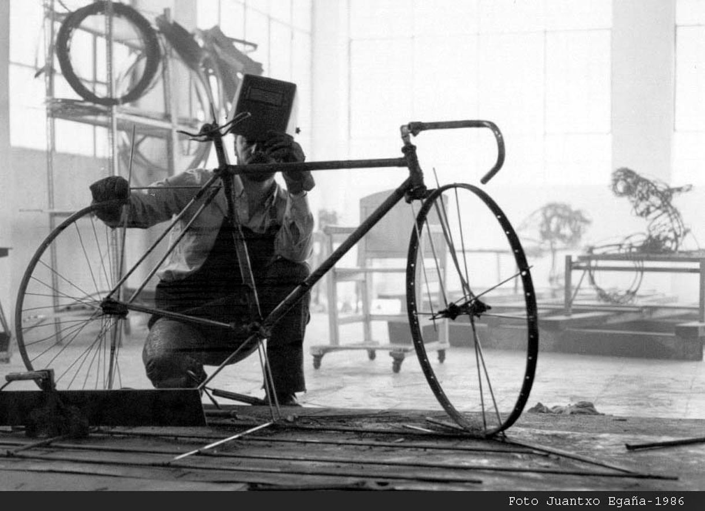

06 · Taller
Donde nacía la línea
El taller de José Zugasti se encuentra en Beraun, Gipuzkoa, en el municipio de Errenteria. Trabajó en él durante 40 años, y es allí donde nació buena parte de su obra escultórica.
Hoy el taller es la sede de la Fundación José Zugasti Fundazioa y está abierto al público bajo cita previa.
Visitas bajo cita previa.
Solicitar visita ->